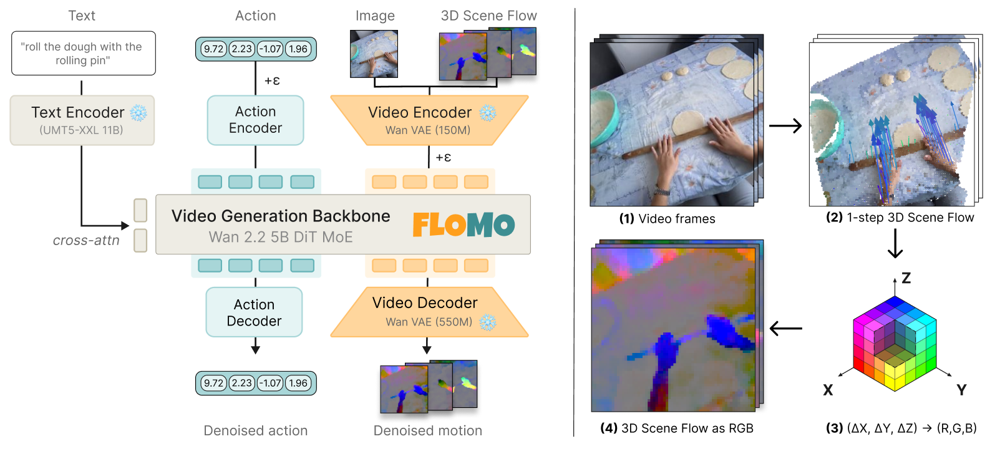
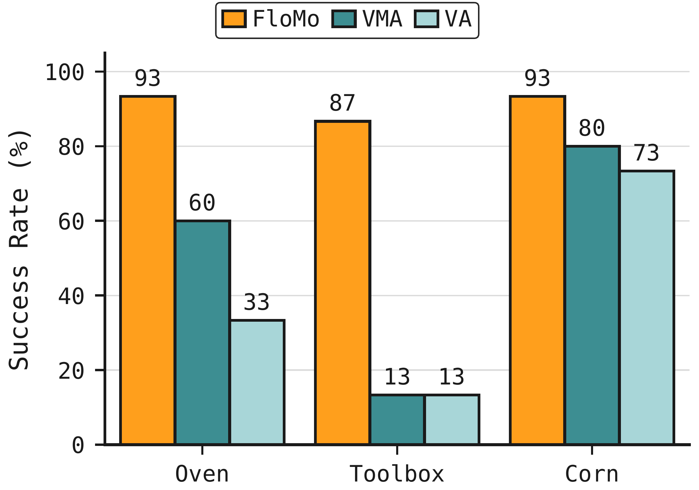
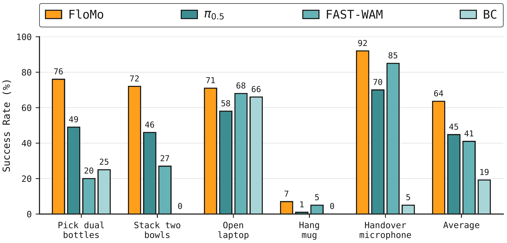
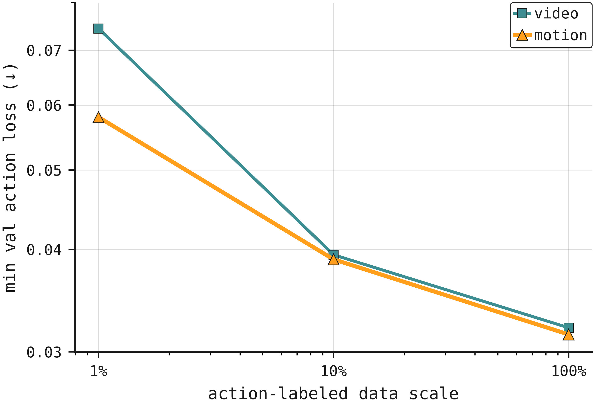

3D Scene Flow as a World Action Model Intermediate for Learning from Human Video
1 / 14
Video contains unnecessary information
What WAMs predict
Motion necessary for control
2 / 14
3D scene flow as the prediction target
RGB
3D point tracks
Scene flow as RGB
3 / 14
Rendering 3D scene flow as RGB

1
A 16-frame clip
2
Tracked 64 x 64 grid of points
3
(dX, dY, dZ) becomes (R, G, B)
4
Scene flow as RGB
4 / 14
Architecture
1
Inputs: instruction, image, noisy scene flow, noisy actions
2
Frozen umT5-XXL and Wan 2.2 VAE encoders
3
Wan 2.2 5B DiT, LoRA r = 64
4
Denoised scene flow and actions
5 / 14
Co-training on human video and robot teleoperation
Human video: scene flow
Robot teleoperation: scene flow + actions
81 h
egocentric human video (EgoVerse)
14 h
bimanual YAM teleoperation
6 / 14
In-distribution real-robot tasks
FloMo rollouts
Oven
Open the oven and put the croissant in the plate
Toolbox
Open the toolbox and put the screwdriver inside
Corn
Put the corn in the bowl
7 / 14
In-distribution success rates

Average success rate, 15 rollouts per task
91
FloMo: motion + action
51
VMA: video + motion + action
40
VA: video + action
8 / 14
Out-of-distribution real-robot tasks
FloMo rollouts
Close Cabinet
Unseen motion primitive
Pull String
Unseen task
Highlighter
Unseen object
9 / 14
Out-of-distribution success rates
| Method | Close Cabinet | Pull String | Highlighter | Aggregate | SR % | TP % |
|---|---|---|---|---|---|---|
| VMA | 0/10 | 0/10 | 2/10 | 2/30 | 7 | 15 |
| VA | 0/10 | 1/10 | 1/10 | 2/30 | 7 | 15 |
| DreamZero | 5/10 | 1/10 | 0/10 | 6/30 | 20 | 30 |
| AMPLIFY | 6/10 | 0/10 | 0/10 | 6/30 | 20 | 23 |
| FloMo, no human video | 0/5 | 1/5 | 0/5 | 1/15 | 7 | 30 |
| FloMo | 6/10 | 7/10 | 5/10 | 18/30 | 60 | 68 |
10 / 14
Transfer from human video
Out-of-distribution success rate
FloMo
60%
vs
FloMo (no human video)
7%
Human video
Robot teleoperation
11 / 14
RoboTwin sim results

Average success rate, RoboTwin Easy, 5 tasks
63.6
FloMo
44.8
π 0.5
41.0
FAST-WAM
19.2
BC
12 / 14
Motion as an action intermediate
22%lower action error than video at 1% of the action data

3xmore action-query attention to motion than to video

13 / 14
3D Scene Flow as a World Action Model Intermediate for Learning from Human Video
flomo-icra.github.io
14 / 14